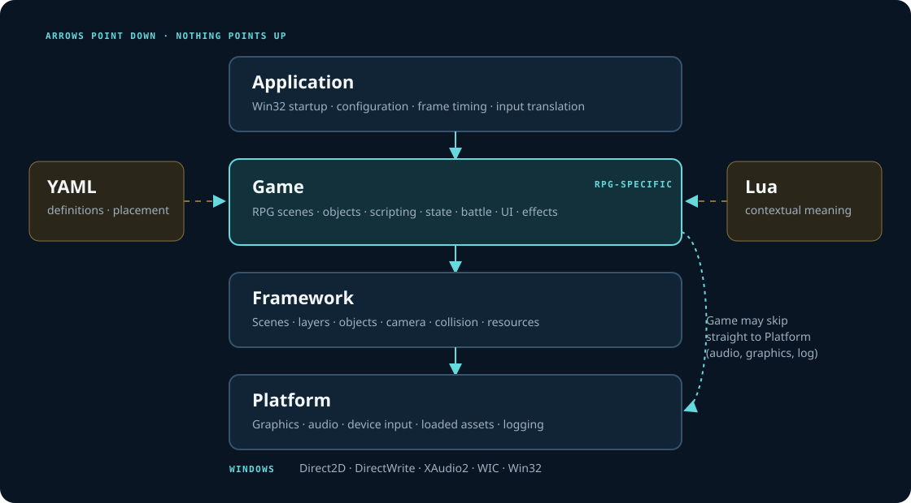
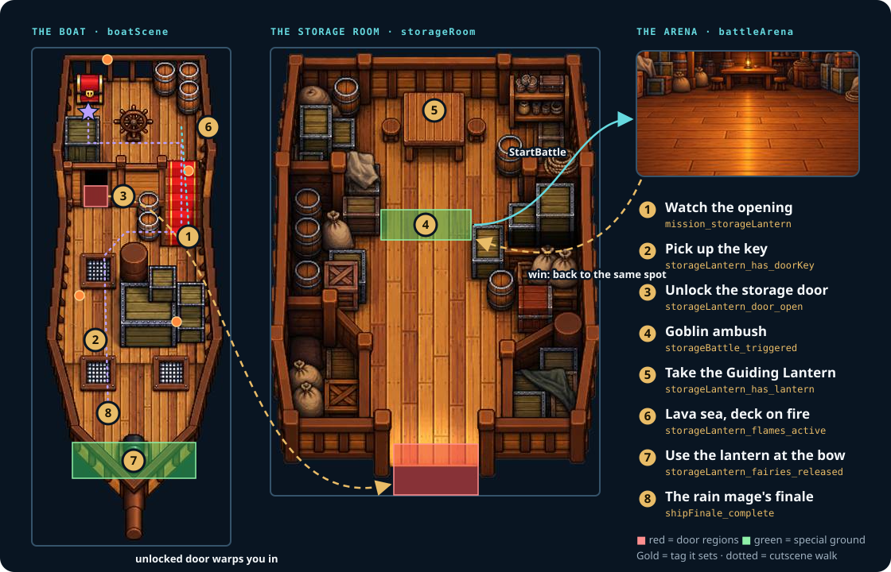
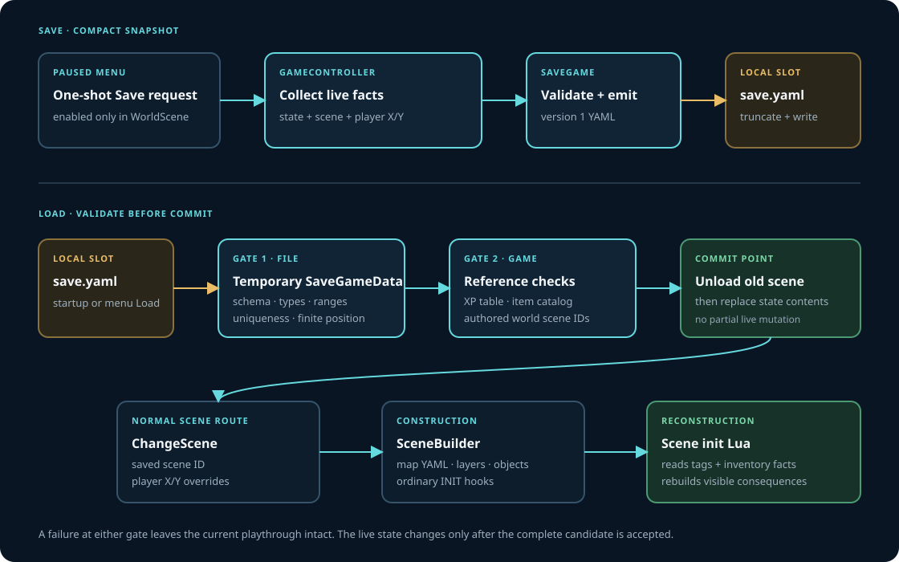

✳ THE SAME ATLAS, A DIFFERENT MOOD
A little more play in the architecture.
A visual test for a warmer, bubblier documentation style. Same fixed sidebar and article flow; the real Atlas diagrams are here to check contrast and scale.
rounder shapesbolder typebright lilac + peach
01
SYSTEMS · OWNERSHIP
The whole project, at a glance
The rounded frames add warmth around the diagram. The drawing itself remains crisp and spacious, so technical labels still have room to breathe.

02
GAMEPLAY · ROUTE
See the playable slice

03
RUNTIME · STATE
Who owns what stays clear

04
RUNTIME · SAVE/LOAD
Long diagrams still fit
